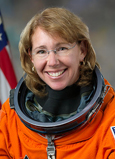

Lyndon B. Johnson Space Center
Houston, Texas 77058
|
National Aeronautics and Space Administration Lyndon B. Johnson Space Center Houston, Texas 77058 |
 |
Biographical Data |
||
Sandra H. Magnus (Ph.D.)
NASA ASTRONAUT (FORMER)
PERSONAL DATA: Born October 30, 1964, in Belleville, Illinois. Enjoys soccer, reading, cooking, travel and water activities.
EDUCATION: Graduated from Belleville West High School, Belleville, Illinois, in 1982; received a Bachelor’s degree in Physics and a Master’s degree in Electrical Engineering from the University of Missouri-Rolla in 1986 and 1990, respectively, and a Doctorate from the School of Material Science and Engineering at the Georgia Institute of Technology in 1996.
ORGANIZATIONS: The Explorers Club, Women in Aerospace, American Association for the Advancement of Science, Association of Space Explorers, American Institute of Aeronautics and Astronautics (AIAA).
SPECIAL HONORS: Several team, teaching and alumni awards, NASA Space Flight Medal (2002, 2009, 2011) NASA Distinguished Service Medal (2009), NASA Exceptional Service Medal (2012), 40 at 40 Award (given to former collegiate women athletes to recognize the impact of Title IX).
EXPERIENCE: From 1986 to 1991, Dr. Magnus worked for McDonnell Douglas Aircraft Company as a stealth engineer, working on internal research and development and later, the Navy's A-12 Attack Aircraft program, studying the effectiveness of radar signature reduction techniques. From 1991 to 1996, Dr. Magnus completed her thesis work, which was supported by NASA Lewis Research Center through a Graduate Student Fellowship and involved investigations on materials of interest for "Scandate" thermionic cathodes.
NASA EXPERIENCE: Selected by NASA in April 1996, Dr. Magnus reported to the Johnson Space Center in August 1996. She completed two years of training and evaluation and became qualified for flight assignment as a Mission Specialist. From January 1997 to May 1998, Dr. Magnus worked in the Astronaut Office Payloads/Habitability branch. Her duties involved working with European Space Agency (ESA), National Space Development Agency of Japan (NASDA) and Brazil on science freezers, glove boxes and other facility-type payloads. In May 1998, Dr. Magnus was assigned as a “Russian Crusader,” which involved traveling to Russia in support of hardware testing and operational products development. In August 2000, she served as a Capsule Communicator (CAPCOM) for the International Space Station. In August 2001, she was assigned to STS-112. Following STS-112, Dr. Magnus was assigned to work with the Canadian Space Agency to prepare the Special Dexterous Manipulator robot for installation on the space station. She was also involved in Return To Flight activities, leading the Astronaut Office team in that effort. In July 2005, Dr. Magnus was assigned to the station expedition corps and began training for a future station long-duration mission. She flew to the station with the crew of STS-126, launching on November 14 and arriving at the station on November 16, 2008, where she joined Expedition 18. Following her station mission, Dr. Magnus served six months at NASA Headquarters in Washington, D.C., working in the Exploration Systems Mission Directorate. In July 2011, Dr. Magnus flew as a mission specialist on the crew of STS 135/ULF7, an ISS cargo delivery mission that carried the Multi Purpose Logistics Module (MPLM), “Raffaello.” She became Deputy Chief, Astronaut Office, in September 2012. Dr. Magnus left the agency in October 2012, after being appointed Executive Director of the American Institute of Aeronautics and Astronautics (AIAA).
SPACEFLIGHT EXPERIENCE: STS-112 Atlantis (October 7 to October 18, 2002) launched from and returned to land at the Kennedy Space Center, Florida. STS-112 was an International Space Station assembly mission, during which the crew conducted joint operations with Expedition 5 by delivering and installing the S-1 truss (the third piece of the ISS 11 piece integrated truss structure). Dr. Magnus operated the station robotic arm during the three spacewalks required to outfit and activate the new component. The crew also transferred cargo between the two vehicles and used the shuttle thruster jets during two maneuvers to raise the station orbit. STS-112 was the first shuttle mission to use a camera on the external tank, providing a live view of the launch to flight controllers and NASA TV viewers. The mission was accomplished in 170 orbits, traveling 4.5 million miles in 10 days, 19 hours and 58 minutes.
STS-126 Endeavour launched on November 14, 2008, and arrived at the International Space Station two days later to start Dr. Magnus’ participation in Expedition 18 as the Flight Engineer 2 and Science Officer. The shuttle delivered all the additional components necessary to expand the station to support a six-person crew. During the course of Expedition 18, Dr. Magnus and Capt. Mike Fincke worked to install a water regeneration system, two new crew quarters, an advanced resistive exercise device and a second toilet. In addition, several new payload racks were installed and activated. Overall, the mission completed the upgrade required to begin six-person-crew operations in May 2009; supported two Orlan based spacewalks and completed twice the amount of science originally planned for the increment. Dr. Magnus returned home on STS-119, which delivered and installed the final solar array to the space station. STS-119 landed on March 28, 2009, bringing Dr. Magnus safely back to Earth after a stay of 4.5 months and traveling 50,304,000 miles.
STS-135/ULF7 Atlantis (July 8 to July 21, 2011) carried the Raffaello MPLM to deliver supplies, logistics and spare parts to the station. The mission also flew a system to investigate the potential for robotically refueling existing spacecraft and returned a failed ammonia pump module to help NASA better understand the failure mechanism and improve pump designs for future systems. Dr. Magnus was assigned loadmaster on STS-135 and was responsible for the transfer of nearly 10,000 pounds of supplies to the station and 6,000 pounds of equipment for return. She also was the primary robotics officer and worked with pilot Doug Hurley to install the Multi-Purpose Logistics Module (MPLM) on the space station and supported the spacewalk. STS-135 was the 33rd flight of Atlantis, the 37th shuttle mission to the station and the 135th and final mission of NASA’s Space Shuttle Program. The mission, which included one spacewalk by Expedition 28’s Mike Fossum and Ron Garan, was accomplished in 200 orbits of the Earth, traveling 5,284,862 miles in 12 days, 18 hours, 27 minutes and 56 seconds.
OCTOBER 2012
This is the only version available from NASA. Updates must be sought direct from the above named individual.